2243.2 Génie Logiciel - 2026-2027
Vue d'ensemble
2.1 Analyse des besoins
2.2 Conception
2.3 Implémentation
2.4 Tests
2.5 Déploiement et maintenance
Récapitulatif
Cycle de vie d'un logiciel ou système :
Il n'y a pas de standard (terminologie, nombres, frontières exactes, etc.)
Mais il y a des « classiques »
Fonctionnelles : fonctions et services offerts par le logiciel
Non fonctionnelles : contraintes imposées au logiciel, ou au processus de développement
Poser des questions et discuter avec ceux qui détiennent l'information
Sélection des participants
Sélection des questions
Préparation des interviews
Conduite des interviews
Documentation et suivi
Technique développée par IBM à la fin des années 1970
Se focaliser sur les exigences
Éviter les spécifications trop vagues ou trop floues
Coordinateur ou animateur (facilitator)
10 à 20 participants
1 ou 2 personnes qui assistent l'animateur (notes, vidéos, etc.)
Lorsque le nombre d'utilisateurs est important
Pour atteindre des utilisateurs « externes »
Formats : papier / dématérialisé (mailing, forms, etc.)
Sélection des participants
Conception du questionnaire
Administration du questionnaire
Analyse des résultats
Permet de mieux comprendre l'existant ⇒ découvrir les exigences futures
Des rapports concernant le système existant
Les documents de travail
Les annotations et ajouts par les utilisateurs
La circulation des documents (workflow)
Les utilisateurs ne sont pas toujours capables de décrire leur fonctionnement
Cette technique peut être combinée avec des interviews (sur place)
Nécessite une expertise particulière : didacticiens, sociologues, …
Must (essentiel, incontournable)
Should (souhaitable)
Could (envisageable)
Won't (superflu)
Simples, ne nécessitent aucun apprentissage particulier
Ambigus, manque de précision, verbeux, etc.
Diagrammes, tableaux, graphiques, user stories
Synthétique, moins verbeux, dépend de la standardisation
Précision, clarté et absence d'ambiguïté
Difficile à maîtriser, nécessaires pour logiciels critiques (nucléaire, santé, …)
Manière d'utiliser le système
Décrire les exigences fonctionnelles
Un cas d'utilisation : événements faisant quelque chose d'utile
Un système peut être décomposé en cas d'utilisation
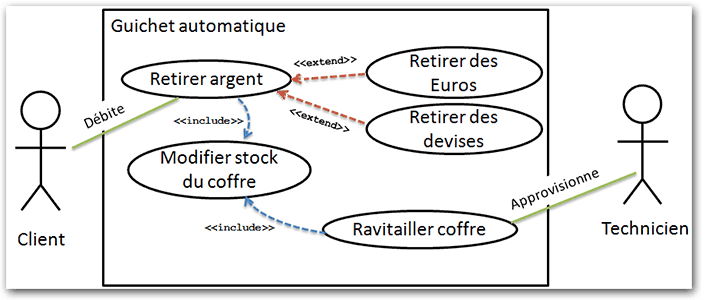
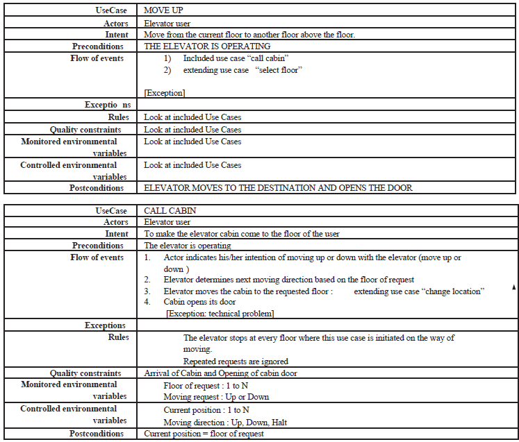
Passer du
Comment mettre en œuvre les modèles définis dans l'analyse
Faire évoluer les modèles d'analyse : découpage - factorisation
Conception des architectures : logicielle - matérielle - réseaux - …
Conception des interfaces utilisateurs
Conception des données persistantes
Conception détaillée des classes ou modules
Concevoir et développer le système avec l'équipe du projet
Meilleur contrôle sur le projet
Meilleure connaissance des spécifications
Flexibilité dans la solution des problèmes métiers
Acquisition d'expérience
Plus de maîtrise lors de la maintenance
Nécessite et monopolise des ressources
Difficulté à accumuler différents profils et compétences en interne
Tendance aux débordements, distractions, …
Acheter / adapter un logiciel (composant, asset, plugin, librairie, IP core) générique qui répond aux specs
Minimiser les risques
Coûts souvent plus abordables
Temps de réponse très court
Choix entre variantes
Accepter l'existant sur le marché
Nécessité de gérer les configurations, paramétrages, …
Problèmes d'intégration
Laisser une société de services développer le système
Nécessite une spécification très claire des besoins et un choix rigoureux du prestataire de service
Profiter de l'expérience du prestataire
Avoir une vision externe
Gérer les délais
Risque selon le prestataire
Dépendance pour la maintenance par la suite
Les besoins métiers
L'expérience de l'équipe
La spécificité du projet
Les contraintes de temps
Définition d'une matrice des alternatives
Possibilité de combiner les approches
Les systèmes développés sont intégrés à l'existant :
infrastructure logicielle,
politique de sécurité
Situer le système dans cet environnement
Préciser les structures de communication, la structure matérielle et la structure logicielle du système
Décrire son intégration dans l'environnement existant
Aspects liés aux langues : codage, interfaces
Politique de contrôle : centralisation des applications, configurations, distribution, personnalisation
Standards, normes, cultures : standards de fait, normes internationales, pratiques locales, etc.
Support : assurer un support 24/7, backup et sauvegarde
Aspects importants d'une GUI :
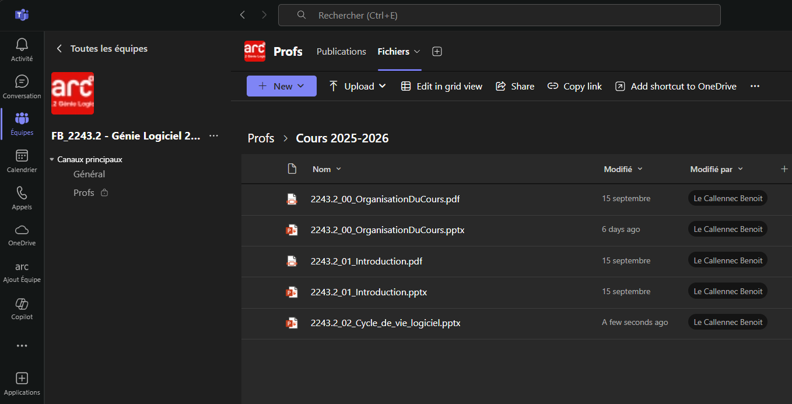
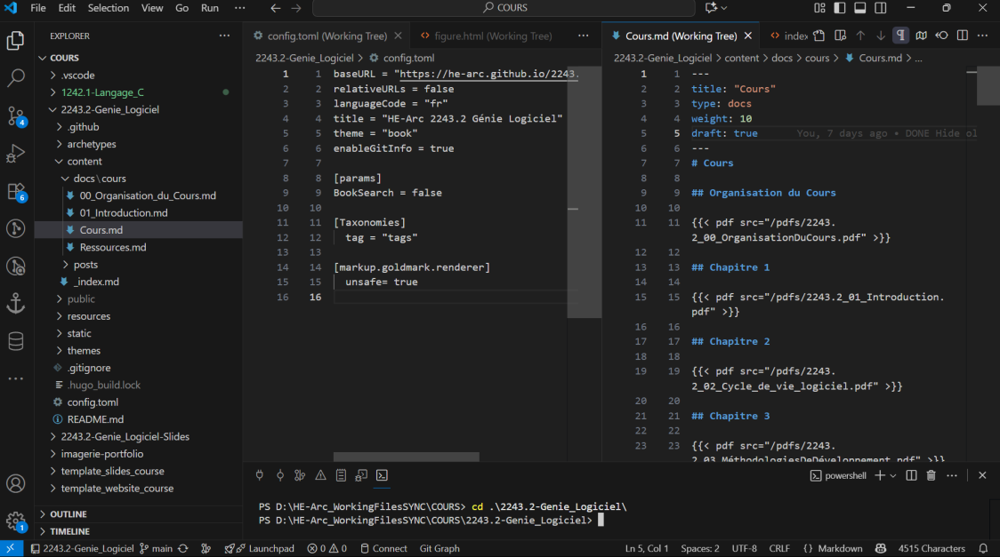
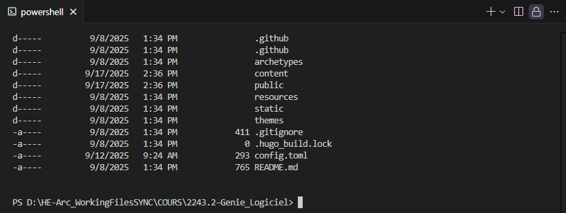
Langages de commande (CLI) : shell, scripts, DOS, SQL, …
Les menus : fixes, contextuels, ruban, onglets, …
La manipulation directe : liens, raccourcis, Tab, Enter, …
Les messages : interagir avec l'utilisateur et ses actions (erreurs, confirmation, information, etc.)
La documentation : documenter les choix réalisés dans la définition de la navigation
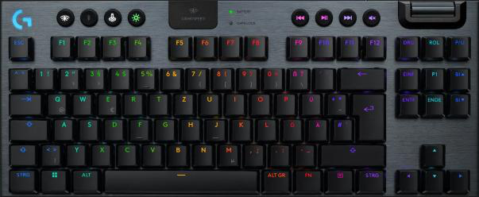
Aspects importants : traitements batch ou en ligne, maximiser l'extraction des données à la source, minimiser les entrées clavier
Type d'entrées : texte, nombres, sélections
Importance de la validation des entrées : complétude, format, intervalle de valeur, consistance et cohérence
Aspects importants : identifier les besoins pour éviter la surcharge cognitive, minimiser les sorties biaisées
Types de sorties : affichage écrans, les rapports, les médias
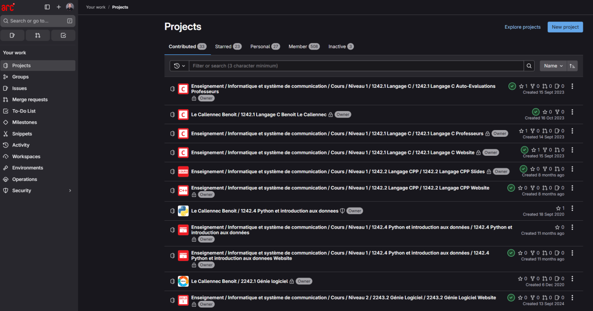
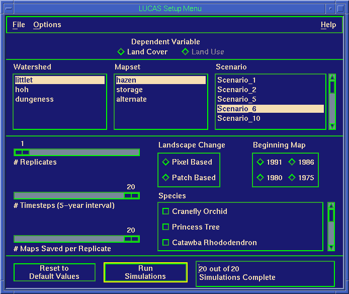
Listes et nature des composants d'interface utilisés
Liens et séquence des composants
Techniques : description textuelle, diagramme de navigation (Windows Navigation Diagram), diagrammes d'états
Si possible : maquettes, prototype, références
GUI cohérente, compréhensible et uniforme
Créer un environnement intuitif pour travailler
Les métaphores : cockpit - caddie - journal - dashboard - …
Terminologie : noms des objets, noms des actions
Les icônes
Les templates : région, look, entête, couleur, …
Confirmer
OKC'est OK
OUI
Ceci n'est pas un lien
Continuer
Concrétiser la structure et les standards définis auparavant
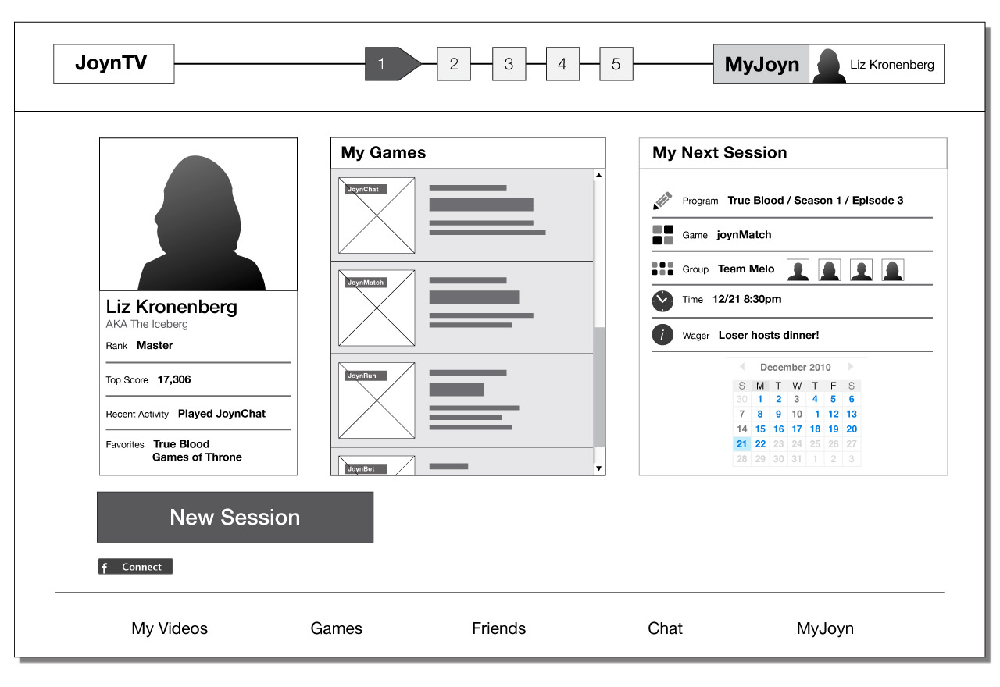
Storyboard
Prototypage HTML
Langages de prototypage dédiés
Langages standards avec des outils de développement intégrés
Valider les choix réalisés et les améliorer en cas de besoin
L'évaluation doit être réalisée le plus tôt possible afin d'éviter des modifications conséquentes par la suite
Évaluation heuristique : utilisation par l'équipe
Évaluation par parcours : démonstration à l'utilisateur
Évaluation interactive : laisser l'utilisateur tester
Tests formels de « usability »
GUI testing tools : Selenium, Ranorex, etc.
Simple fichier texte
Fichier texte structuré (XML, JSON)
Fichier binaire avec un format (version, header, …)
Base de données légère (fichier local)
BDD relationnelle traditionnelle
Dépôt (avec historique, …)
Techniques, outils, environnements de programmation : voir autres cours
Client sur site
Jeu du planning (planning poker)
Intégration continue
Petites livraisons
Rythme soutenable
Tests fonctionnels
Tests unitaires
Conception simple
Utilisation de métaphores
Refactoring (ou remaniement du code)
Appropriation collective du code
Convention de nommage
Programmation en binôme
Examen systématique d'un code source afin d'en améliorer la qualité (trouver des bugs, etc.)
Pair programming, code review session
« Linter », analyse statique (sans exécution) du code, tests unitaires, calculs de métriques (CCCC)
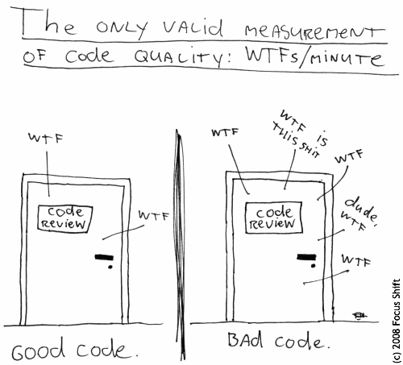
Un reviewer trouve en moyenne 15 défauts par heure (durée max)
Un test ne trouvant aucun bug est un échec !
Éviter l'approche « montrer que ça marche » !
Ainsi, il est préférable de confier l'activité de test à une équipe séparée de celle du développement.
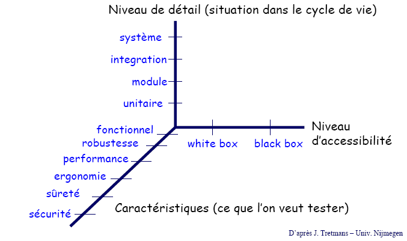
Pas d'exécution du logiciel
Vérification et validation basées sur les modèles, la documentation
Exécution du logiciel
Comparaison entre les résultats obtenus et les oracles (résultats spécifiés, attendus)
Classe, méthode, fonction
Détecter les erreurs de programmation (logique)
Sous-systèmes, modules, packages
Détecter les erreurs d'interfaces
Architecture, interaction, performance, sécurité, stress
Tests d'intégration mais en condition réelle
Utilisation, ergonomie, fonctionnalité, non régression
Détecter les non-conformités au niveau du CDC avec utilisateurs réels
Pas d'accès au code
Tests basés sur les entrées-sorties
On parle aussi de tests orientés données
Le code est accessible
Basés sur la structure et la logique du code
Appelés aussi tests fonctionnels
Valeurs frontières
Classes d'équivalence
Tables de décisions
Random
On dispose du code source
Les tests tiennent compte de la structure du code source
Difficulté de couverture (nombre de chemins possibles grand)
Chemin d'exécution, flot de données, complexité cyclomatique
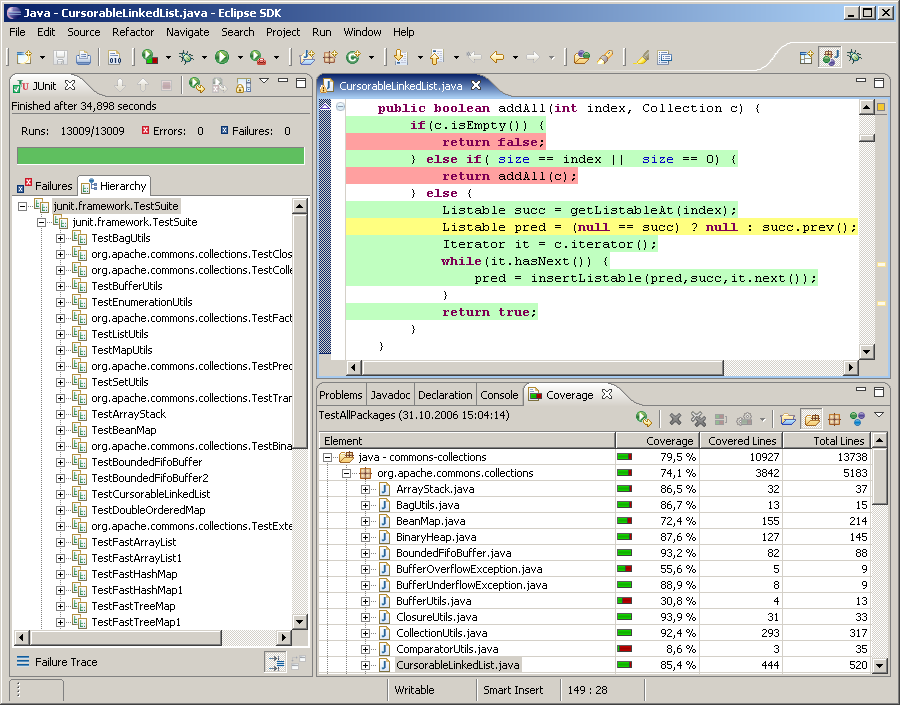
Function coverage
Statement coverage
Condition coverage
Path coverage
Installation sur les machines de la société cliente
Raccordement au réseau de la société cliente
Utilisation de la base de données de la société
Ce contexte d'utilisation doit être décrit avec précision dans la spécification du logiciel afin d'éviter les mauvaises surprises lors de cette phase de déploiement
Phase généralement accompagnée de problèmes semblables à ceux rencontrés lors de l'intégration !
En effet, le déploiement est un cas particulier d'intégration
⇒ Continuous Integration /
Continuous Deployment
C'est pour cette raison que dans le cycle de vie d'un logiciel,
Directe (« big bang ») vs progressive (2 systèmes en parallèle)
Transition complète : système entier
Transition modulaire
Gestion des changements organisationnels
Gestion des risques
Politique ou stratégie de déploiement
Motivation des utilisateurs (trauma, écoute)
Formation
3 activités importantes :
Formation, support online (niveaux 0, 1, 2, 3), etc.
Gestion du projet, équipes, techniques et méthodologies
La partie la plus coûteuse dans le cycle de vie d'un logiciel
Partie la moins développée en génie logiciel
Peu de théorie, de fondements, de littérature, etc.
Processus de développement, mais avec un système existant
Ce n'est pas une activité ponctuelle : elle se prépare durant les autres phases du projet :
Dans la conception, maximiser l'abstraction, le masquage de l'information, la modularité, etc.
Dans l'implémentation, utiliser des noms de variable significatifs, des commentaires parlants, etc.
La documentation doit être juste, complète et doit refléter l'état courant et actuel du logiciel
Prendre en compte la pérennité des composants et technologies
* Pas de la maintenance au sens strict du terme
de spécification
de conception
d'implémentation
de documentation
…
Porter sur un nouvel environnement ou un nouveau système
Utiliser un nouveau compilateur ou langage de programmation
Changement dans certaines variables de base
Taille du code postal, passage au bitcoin, scanner de code-barres ⇒ QR code ⇒ NFC, bug de l'an 2000, …
Suivre l'obsolescence des composants (IIE)
Ajout de nouvelles fonctionnalités
Amélioration des performances du logiciel
Amélioration de la maintenabilité du logiciel (refactoring, …)
Cycle de vie d'un logiciel ou système :